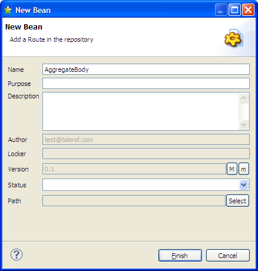
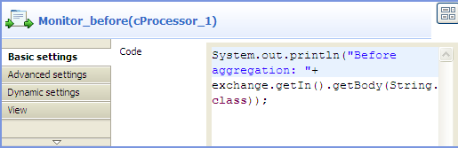
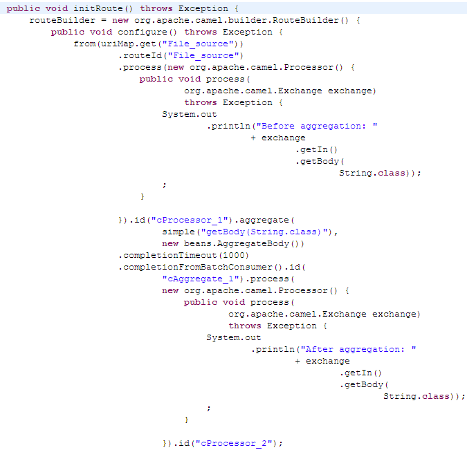

|
Component Family |
Routing | |||
|
Function |
cAggregate aggregates messages together according to specified conditions. | |||
|
Purpose |
cAggregate allows you to combine a number of messages together into a single message. | |||
|
Basic settings
|
Language | Select the language of the expression you want to use to filter your messages, from Constant, EL, Groovy, Header, Javascript, JoSQL, JXPath, MVEL, None, OGNL, PHP, Property, Python, Ruby, Simple, SpEL, SQL, XPath, and XQuery. | ||
|
Correlation expression/Expression |
Type in the expression that evaluates the correlation key to be used for the aggregation. | |||
| Strategy | Specify a Java bean to use as the aggregation strategy. | |||
| Completion conditions/Number of messages |
Select this check box to specify the number of messages to aggregate per batch before the aggregation is complete.
| |||
| Completion conditions/Inactivity timeout (in milliseconds) |
Select this check box to specify the time (in milliseconds) that an aggregated exchange should be inactive before it is complete. This option can be set as either a fixed value or using an Expression which allows you to evaluate a timeout dynamically.
| |||
| Completion conditions/Scheduled interval (in milliseconds) |
Select this check box to specify a repeating period (in milliseconds) by which the aggregator will complete all current aggregated exchanges.
| |||
| Completion conditions/Predicate matched | Select this check box to specify a predicate to indicate when an aggregated exchange is complete. | |||
| Completion conditions/Batch consumer | Select this check box to aggregate all files consumed from a file endpoint in a given poll. | |||
| Advanced settings | Check completion before aggregating | Select this check box to check for completion when a new incoming exchange has been received. This option influences the behavior of the Predicate matched option as the exchange being passed in changes accordingly. When this option is disabled, the exchange passed in the predicate is the aggregated exchange which means any information you may store on the aggregated exchange from the aggregation strategy is available for the predicate. When this option is enabled, the exchange passed in the predicate is the incoming exchange, which means you can access data from the incoming exchange. | ||
| Close correlation group | Select this check box to indicate that if a correlation key has already been completed, then any new exchanges with the same correlation key will be denied. When using this option, enter a number in the Maximum bound field to keep that last number of closed correlation keys. | |||
| Ignore invalid correlation key | Select this check box to ignore the invalid correlation key which could not be evaluated to a value. By default Camel will throw an Exception on encountering an invalid correlation key. | |||
| Group arriving exchange | Select this check box to group all aggregated exchanges into a single combined holder class that holds all the aggregated exchanges. As a result only one exchange is being sent out from the aggregator. This option can be used to combine many incoming exchanges into a single output exchange. | |||
| Use persistence | Select this check box to plug in your own implementation of the repository which keeps track of the current in-flight aggregated exchanges. By default, Camel uses a memory based implementation. | |||
| Repository | This field appears when the Use persistence check box is selected. The repository is AggregationRepository, HawtDBAggregationRepository, or RecoverableAggregationRepository. | |||
| AggregationRepository: The default repository used by Camel which is a memory based implementation. Enter the name of the repository in the field. | ||||
|
HawtDBAggregationRepository: HawtDBAggregationRepository is an AggregationRepository which persists the aggregated messages on the fly. This ensures that you will not loose messages. With this repository selected, the following options appear: Use persistent file: Select this check box to store the aggregated exchanges in a file. Enter the name of the file for the persistent storage in the Persistent file field. If the file does not exists on startup, it will be created. Recovery/Use recovery: Select this check box to recover failed aggregated exchanges and have them resubmitted automatically. In the Recovery interval field, enter the interval (in milliseconds) to scan for failed exchanges to recover and resubmit. By default this interval is 5000 milliseconds. In the Dead letter channel field, enter an endpoint URI for a Dead Letter Channel where exhausted recovered exchanges will be moved. In the Maximum redeliveries field, enter the maximum number of redelivery attempts for a given recovered exchange. | ||||
|
RecoverableAggregationRepository: RecoverableAggregationRepository is a JDBC based AggregationRepository which persists the aggregated messages on the fly. This ensures that you will not loose messages. Enter the name of the repository in the field. With this repository selected, the following options appear: Recovery/Use recovery: Select this check box to recover failed aggregated exchanges and have them resubmitted automatically. In the Recovery interval field, enter the interval (in milliseconds) to scan for failed exchanges to recover and resubmit. By default this interval is 5000 milliseconds. In the Dead letter channel field, enter an endpoint URI for a Dead Letter Channel where exhausted recovered exchanges will be moved. In the Maximum redeliveries field, enter the maximum number of redelivery attempts for a given recovered exchange. | ||||
|
Usage |
cAggregate is used as a middle or end component in a Route. | |||
| Connections | Aggregate | Select this link to route messages to the next endpoint according to the selected aggregation strategy. | ||
| Route | Select this link to route all the messages from the sender to the next endpoint. | |||
| Limitation | n/a | |||
![[Note]](../images/note.png)
In this scenario, the cAggregate component combines three messages from the local file system into one and prints the messages in the console. A Java bean will be used as the aggregation strategy.
To aggregate the messages, we will use a Java bean that will help us build an aggregation strategy.
From the repository tree view, expand the Code node and right click the Beans node. In the contextual menu, select Create Bean.

The New Bean wizard opens. In the Name field, type in a name for the bean, for example, AggregateBody. Click Finish to close the wizard.
Type in the codes as shown in the figure below. In this use case, we just want to aggregate all messages into a single message.
package beans; import org.apache.camel.Exchange; import org.apache.camel.processor.aggregate.AggregationStrategy; public class AggregateBody implements AggregationStrategy{ public Exchange aggregate(Exchange oldEx, Exchange newEx) { if(oldEx==null){ return newEx; } String oldBody = oldEx.getIn().getBody(String.class); String newBody = newEx.getIn().getBody(String.class); newEx.getIn().setBody(oldBody+newBody); return newEx; } }Press Ctrl+S to save your bean.
From the Palette, expand the Messaging folder, and drop a cFile component onto the design workspace.
Expand the Routing folder, and drop a cAggregate component onto the design workspace.
Expand the Processor folder, and drop two cProcessor components onto the design workspace.
Right-click the cFile component, select Row > Route from the contextual menu and click the first cProcessor component.
Repeat this operation to connect the first cProcessor component to the cAggregate component.
Right-click the cAggregate component, select Row > Aggregate from the contextual menu and click the second cProcessor component.
Label all the components to better identify their functionality, as shown above.
Double-click the cFile component, which is labelled File_source, to display its Basic settings view in the Component tab.

In the Path field, browse to or enter the input file path, and leave the other parameters as they are.
In this scenario, there are four text files in the specified directory: a.txt, b.txt, c.txt and d.txt, the contents of which are This is a! , This is b! , This is c! , and This is d! respectively.
Double-click the cAggregate component, which is labelled Aggregator, to display its Basic settings view in the Component tab.

In the Language field, select Constant or Simple as the expression language.
In the Expression field, enter the expression
"getBody(String.class)"to retrieve the body of the message.In the Strategy field, enter the name of the Java bean AggregateBody you just created.
Select the Number of messages check box and type in 2 in the field.
Double-click the cProcessor component labelled Monitor_before to display its Basic settings view in the Component tab.
In the Code box, customize the code as follows so that the Run console displays the message contents before an aggregation takes place:
System.out.println("Before aggregation: "+ exchange.getIn().getBody(String.class));In the same way, configure the cProcessor component labelled Monitor_after so that the Run console displays the message contents after an aggregation takes place:
System.out.println("After aggregation: "+ exchange.getIn().getBody(String.class));Press Ctrl+S to save your route.
Click the Code tab at the bottom of the design workspace to have a look at the generated code.
As shown in the code, a message
fromtheFile_sourceendpoint is routed viacProcessor_1and then aggregated according to the condition.aggregate.Click the Run view to display it and click the Run button to launch the execution of your route. You can also press F6 to execute it.
RESULT: The four messages are aggregated in two batches, two messages combined into one each batch.